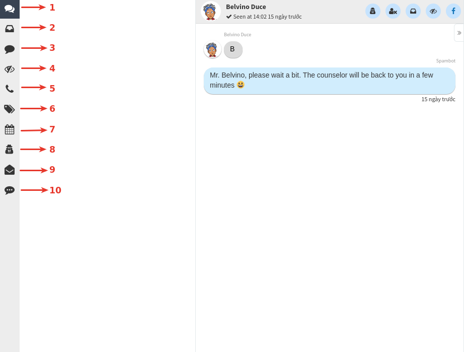
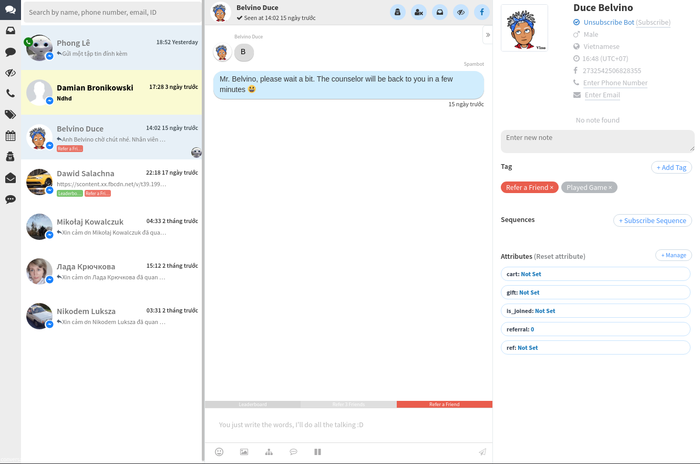
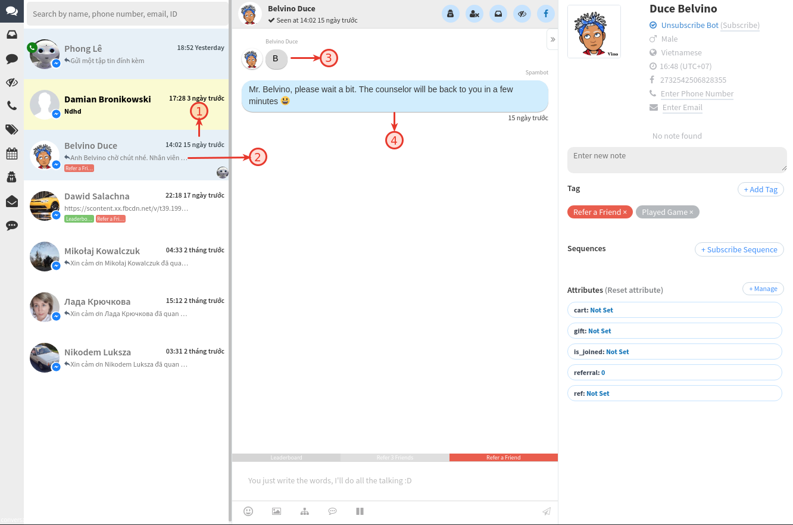
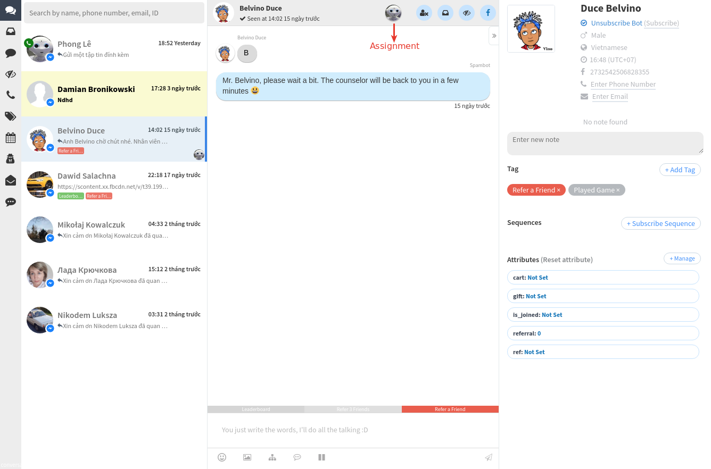
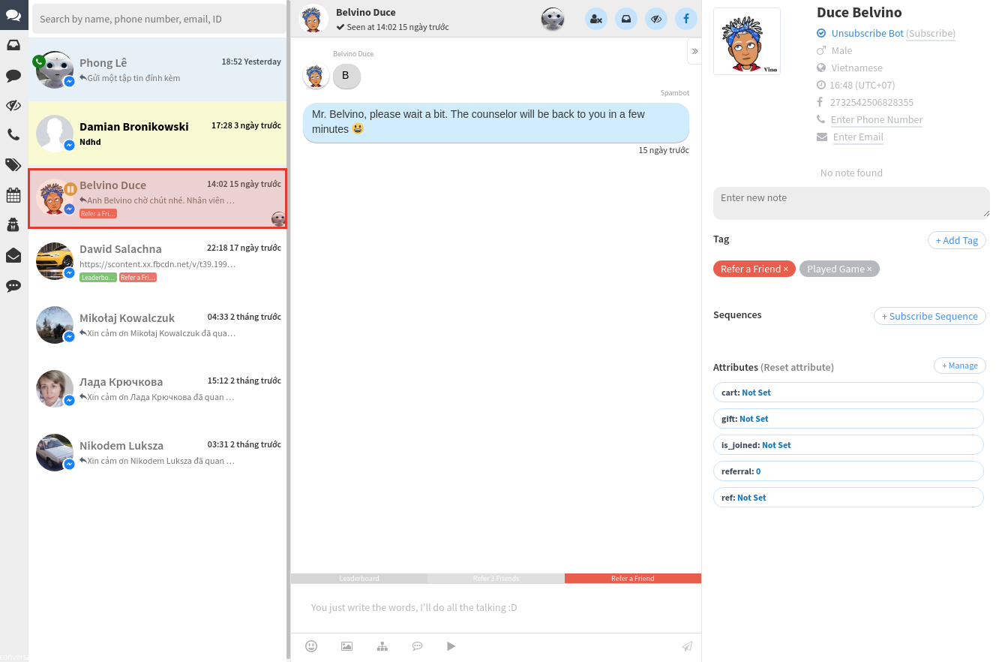
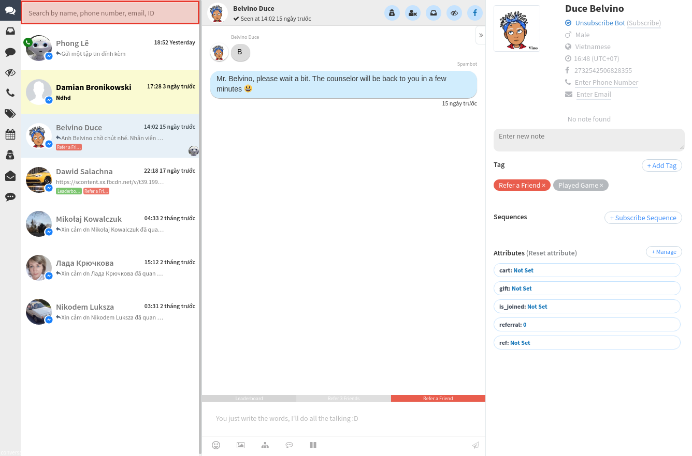
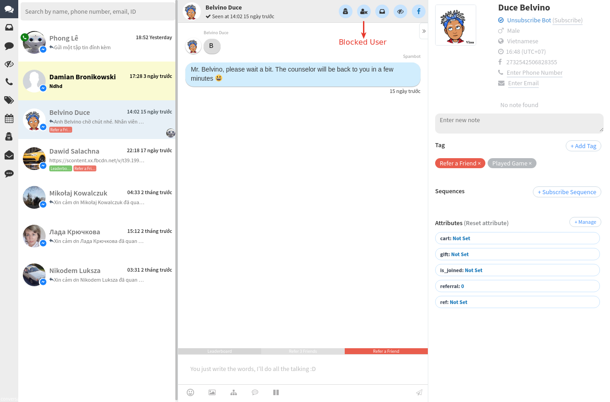
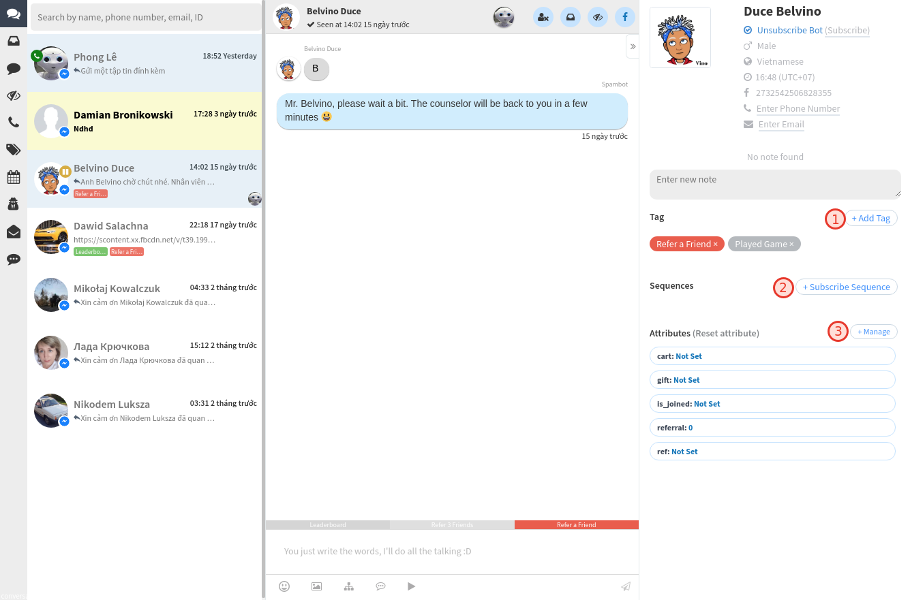
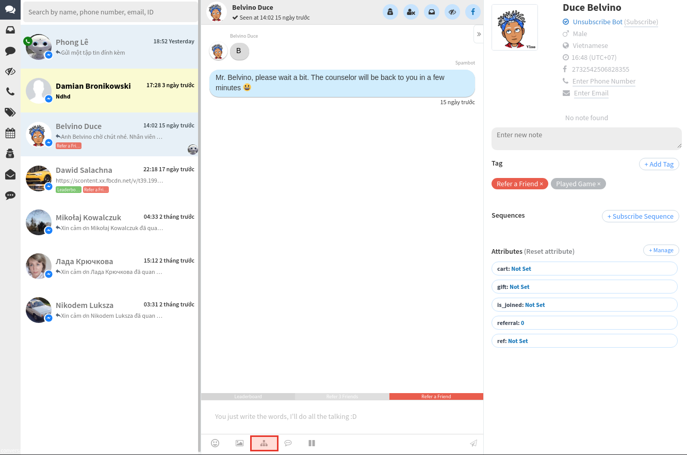
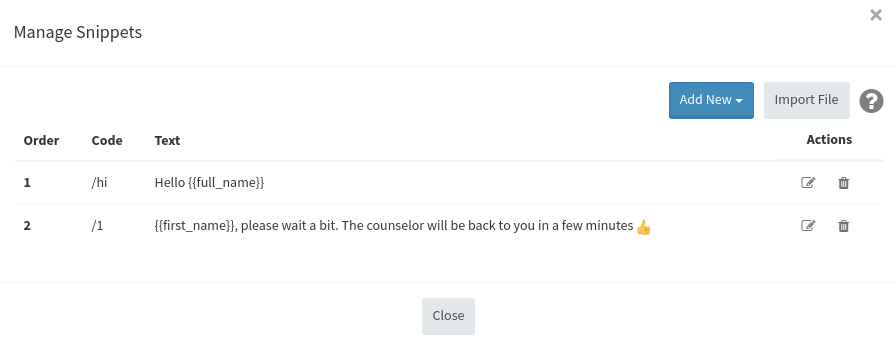

Live chat
Live chat là một công cụ cho phép bạn giao tiếp với khách hàng của mình qua Messenger ngay trong AhaChat. Nó cho phép bạn tham gia một cuộc trò chuyện và trả lời các câu hỏi, quản lý dữ liệu của khách hàng theo cách thủ công (thêm Thẻ, đăng ký Chăm sóc, thêm giá trị Thuộc tính, v.v.) và gửi tin nhắn cho họ.
1. Tổng quan
Phần Live chat bao gồm ba cột: danh sách người đăng ký của bạn, cuộc trò chuyện đa kênh và bảng điều khiển người dùng. Biểu tượng trang gần đó cho phép bạn xem các cuộc trò chuyện được chỉ định (trong trường hợp cuộc trò chuyện được chỉ định cho bạn, bạn sẽ thấy nó ở đó cũng như các cuộc trò chuyện được chỉ định của đồng đội).
Bạn có thể chuyển đổi giữa các cuộc trò chuyện Hộp thư đến và Bình luận bằng menu thanh bên dưới tiêu đề Trò chuyện trực tiếp và sắp xếp chúng (Mới nhất/Cũ nhất). Chọn khách hàng mong muốn để xem cuộc trò chuyện.

- Xem tất cả hộp thư inbox và nhận xét
- Xem hộp thư inbox
- Xem bình luận
- Xem tất cả các hội thoại chưa đọc
- Xem tất cả các hội thoại có số điện thoại
- Lọc các hội thoại theo Thẻ
- Lọc các hội thoại theo phạm vi ngày
- Lọc các hội thoại theo nhân viên được chỉ định
- Lọc các hội thoại chưa được trả lời
- Lọc các hội thoại đã dừng bot
Ở cột giữa, bạn sẽ tìm thấy chính cuộc hội thoại. Bạn có thể gán nó cho ai đó và mở lại trong trường hợp nó đã bị đóng. Tin nhắn bot của bạn được đánh dấu bằng biểu tượng bot và có thể bị ẩn bằng biểu tượng trên cùng. Điều này cho phép bạn tìm thấy tất cả các tin nhắn được gửi bởi quản trị viên page.
Trong cột bên phải (Bảng điều khiển người dùng), bạn có thể xem tất cả thông tin mà bot của bạn đã thu thập trong tất cả các cuộc trò chuyện trước đây và nó cho phép bạn:
- Xem thông tin của người dùng (ảnh hồ sơ, họ tên, trạng thái, giới tính, ngôn ngữ, múi giờ)
- Xem lịch sử tất cả các kênh (Messenger)
- Quản lý gắn và hủy gắn thẻ
- Đăng ký và hủy đăng ký khỏi Chăm sóc
- Quản lý các giá trị thuộc tính người dùng
- Hủy đăng ký người dùng này, tải xuống và xóa dữ liệu của họ

2. Hội thoại
Theo mặc định, các hội thoại được hiển thị theo thời gian của tin nhắn cuối cùng từ người dùng - bạn sẽ tìm thấy các cuộc hội thoại mới nhất có hoạt động gần đây ở trên cùng và những cuộc hội thoại trước đó sẽ được đặt bên dưới. Mỗi khi bạn trả lời người dùng, cuộc trò chuyện sẽ tự động được chuyển lên đầu danh sách.
Dấu thời gian cho biết thời gian của tin nhắn cuối cùng được người dùng gửi theo cách thủ công.

- Thời gian trò chuyện gần nhất với người dùng
- Tin nhắn mới nhất từ người dùng
- Tin nhắn của người dùng
- Tin nhắn của bot hoặc nhân viên
3. Chỉ định
Sử dụng menu thả xuống như được hiển thị bên dưới để chỉ định cuộc trò chuyện cho chính bạn hoặc cho một trong những thành viên trong nhóm của bạn (sử dụng menu tương tự để bỏ gán cuộc trò chuyện). Bạn có thể theo dõi tất cả các nhân viên được chỉ định trong menu thả xuống bên cạnh tiêu đề Phần ở trên cùng bên trái.

4. Dừng bot
Tùy chọn này cho phép bạn dừng tất cả các tin nhắn bot trong khi bạn liên lạc với khách hàng của mình. Ngay sau khi bạn bấm Dừng bot, chế độ tạm dừng 24 giờ sẽ được kích hoạt và khách hàng của bạn sẽ chỉ nhận được tin nhắn được gửi theo cách thủ công từ quản trị viên trong 24 giờ. Trả lời tự động sẽ không được kích hoạt trong khoảng thời gian này. Khi Dừng bot được bật, bạn sẽ thấy biểu tượng dừng bot trên ảnh hồ sơ của khách hàng trong danh sách cuộc hội thoại và bạn có thể bật bot trở lại bất cứ khi nào bạn muốn trong Bảng điều khiển người dùng.

5. Tìm kiếm
Hàng ngàn chủ đề không phải là một vấn đề, bạn có thể tìm kiếm trong tất cả các cuộc trò chuyện và chuyển đến tin nhắn mong muốn để xem chi tiết. 2 ký hiệu là khá đủ để bắt đầu tìm kiếm. Rất tiếc, các ký hiệu đặc biệt không được bao gồm (bạn sẽ không thể sử dụng $, &,%, v.v.).

6.Chặn khách hàng
Các ghi chú sẽ xuất hiện để giúp bạn chặn khách hàng theo cách thủ công, sau đó họ không thể gửi tin nhắn rác đến Trang của bạn nữa.

7. Thêm Thẻ, đăng ký Chăm sóc và quản lý Thuộc tính
Tính năng này được thực hiện để giúp bạn cá nhân hóa khách hàng theo nội dung phù hợp và phân loại khách hàng.

8. Gửi block
Tính năng này cho phép bạn gửi một Block cụ thể cho người đăng ký mà không cần phải tạo thêm các bước tự động hóa. Để làm điều đó, chỉ cần nhấp vào biểu tượng 'Gửi block ở cuối cuộc trò chuyện, sau đó chọn Block và nhấp vào 'Gửi':

Khi Block được gửi đi, bạn sẽ thấy thông báo thành công:
9. Trả lời nhanh
Là câu trả lời được điền sẵn mà bạn có thể gửi cho người đăng ký của mình trong hội thoại chỉ bằng một cú nhấp chuột. Điều này hoàn hảo để trả lời các câu hỏi thường gặp mà bạn đã có câu trả lời và không muốn mất thời gian gõ lại cùng một thông tin.
Để thiết lập Trả lời nhanh, hãy đi tới Biểu tượng Trả lời nhanh. Trong đó, nhấp vào '+ Trả lời nhanh'; bạn sẽ phải chỉ định từ viết tắt và văn bản chính. Tất nhiên, bạn sẽ có thể chỉnh sửa Trả lời nhanh bất cứ khi nào bạn muốn.

Sau khi các Trả lời nhanh được tạo, bạn sẽ thấy chúng trong các cuộc trò chuyện với khách hàng của mình. Chỉ cần nhấp vào Trả lời nhanh cần thiết và nội dung của nó sẽ được tự động thêm vào trường nhập văn bản. Việc duy nhất cần làm bây giờ là bạn nhấn "Gửi"! :)
Bạn có bất kỳ câu hỏi nào liên quan đến tính năng Live chat trong AhaChat? Bạn muốn khởi chạy chiến dịch tiếp cận khách hàng của mình bằng Chatbot với một số lời khuyên chuyên môn từ Đối tác tiếp thị của Facebook? Đừng ngần ngại liên hệ với chúng tôi để có câu trả lời nhanh nhất và hiệu quả nhất! Tận hưởng công cụ chatbot miễn phí của chúng tôi mà không cần phải trả bất kỳ chi phí nào!